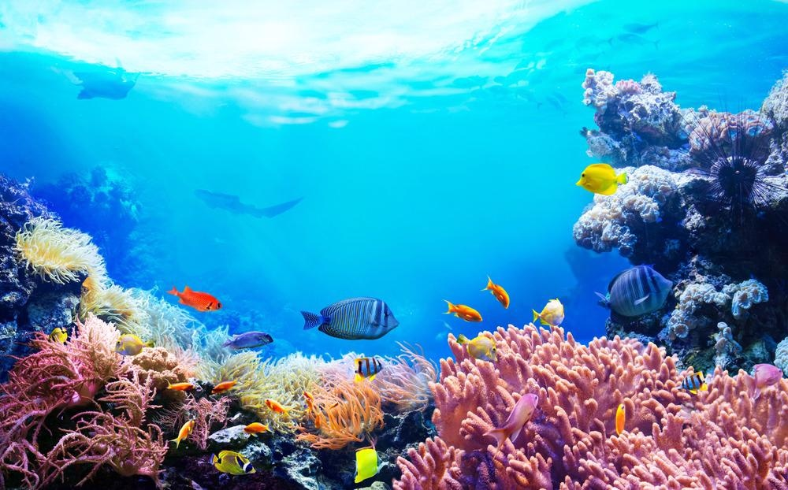
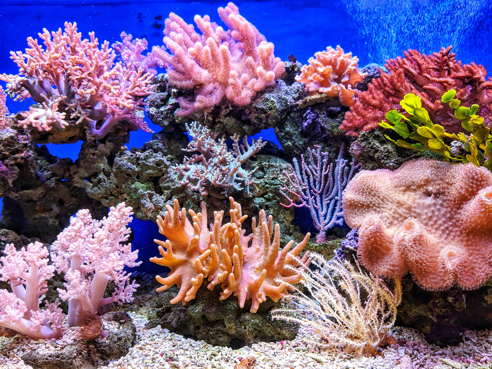
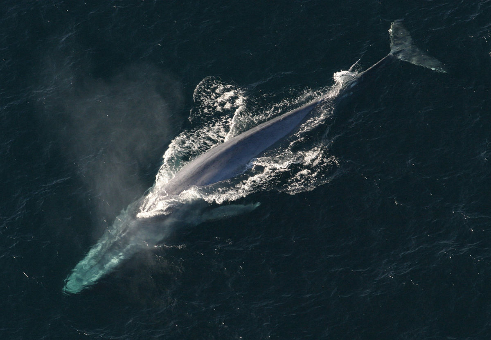

Read more
In the Lab
In parallel to the
development of our sensor,
a lot of effort this year went
to the “Development of Type
IIS cloning Standard”, which
allows a higher degree of
modularity for NANOFLEX.
Read more

Read more
Computational Modelling
Our modelling approach is
two-fold, a python based
stochastic model for
expression of detection
proteins and a molecular
dynamics pipeline for
modifying the nanobody
component of our sensor.
Read more

Read more
Outreach
Informed decision-making is
the motto of our project.
From early on, we have been
contacting experts and
professors for their inputs.
We have also organized
education and collaborations
programs directed to the
iGEM community, but also
to the general public.
Read more

Team
We are the team of Uppsala
University (Sweden) for the
complicated year of 2020.
With different education
backgrounds and from all
over the world, we are 25
students that decided to enrol
in the iGEM adventure.
Read more